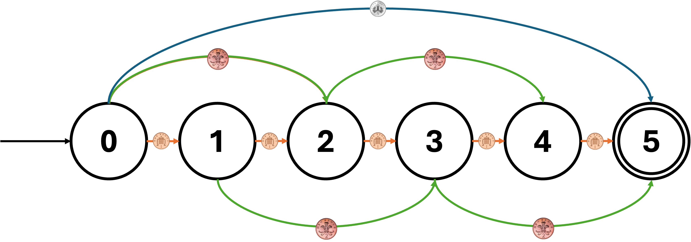
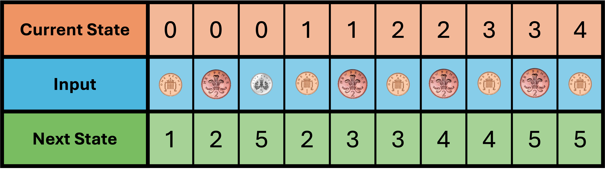
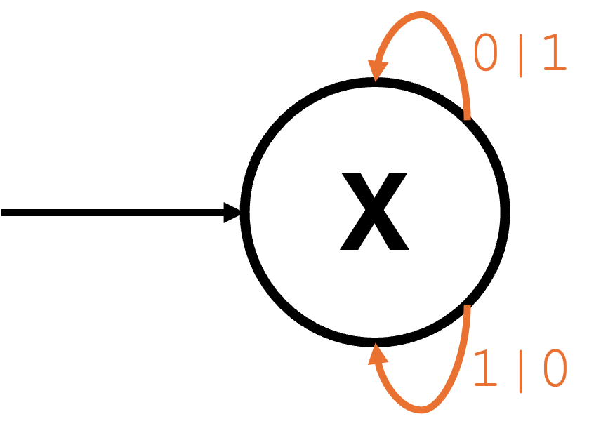

GCSE Link: None
 A finite state machine is a model of how a machine should react to inputs.
A finite state machine is a model of how a machine should react to inputs.
Diagram 1 shows an example finite state machine.
 Diagram 1
Diagram 1

This finite state machine shows the different ways to pay 5p using 1p, 2p and 5p coins. It has 6 states (0 to 5), each showing how much money has been paid already. The arrows show the transitions between the states: each arrow has an input (1p, 2p or 5p coin) attached to it. The initial state, 0, has an arrow going into it. The final state, 5, has a double outline to show the process terminates there.
Finite state machines can also be represented using state transition tables.
Diagram 2 shows the finite state machine from Diagram 1 represented as a state transition table.
 Diagram 2
Diagram 2

There are also types of finite state machines which have outputs. These are called Mealy
machines and they have no final (accepting) states. The input and output of a transition are
both written next to the arrow, separated by a pipe (|).
Diagram 3 shows a simple Mealy machine which flips the bits of a binary string.
 Diagram 3
Diagram 3

When a 0 is entered, a 1 is output, and vice versa. The state doesn't
change because the arrows loop back to the same state.
 What might finite state machines be used for?
What might finite state machines be used for?
Validating user input, controlling traffic lights, managing enemy logic in games, parsing code in compilers, and much more.